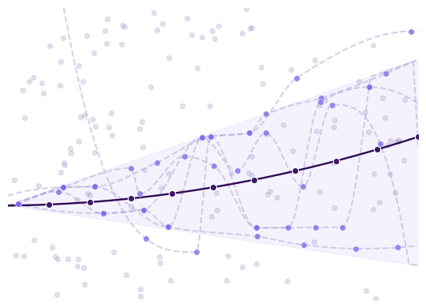
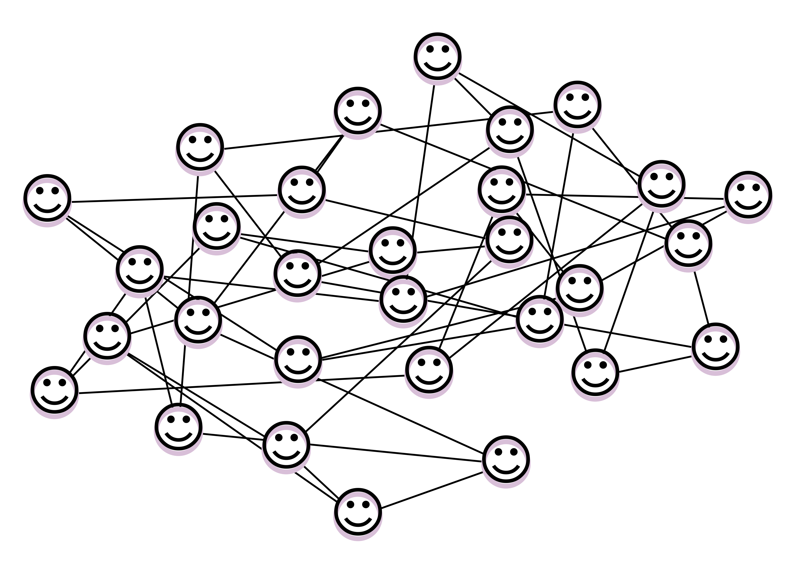
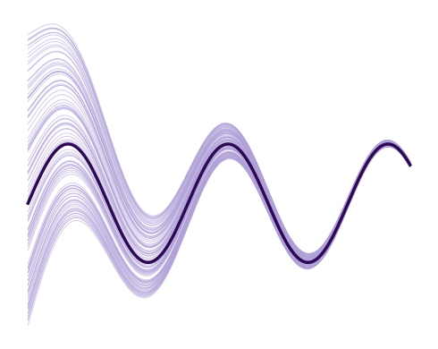

|
Research
“...el pensamiento filosófico tenía que cumplir dos leyes u obligaciones: la de ser autónomo, no admitiendo
ninguna verdad que el mismo no se fabrique, y la ley de pantonomía, no contentándose definitivamente con
ninguna posición que no exprese valores universales; en suma, que no aspire al Universo.” —José Ortega y Gasset.
Explicit solutions in Optimal and Robust Control
 Despite significant advancements in optimal control theory, explicit solutions to general optimal control problems remain exceptional. A notable exception is the linear quadratic regulator as presented in the pioneering work by Kalman. My work involves the study of a class of problems with linear costs, linear positive dynamics and elementwise linear inputs in the presence of disturbances, see Publications.
I am interested in uncovering and studying the underlying mathematical properties of optimal control and optimization problem formulations. By doing so, one can better exploit the mathematical structure of the constraints and objectives within a given problem class. Such properties can, for instance, reveal the existence of explicit or computationally tractable solutions, which is particularly valuable in large-scale settings. I am also curious about how sparsity structures can be enforced or leveraged to improve scalability, as well as identifying conditions under which optimal solutions are also stabilizing.
|
Positive Systems

Positive Systems have gained attention in control theory literature because of the many technological and physical phenomena that can be captured by positive dynamics. Among the various properties of positive systems, the one associated with the dominant mode is particularly relevant as it often enables a significant simplification of stability analysis.
Examples of positive dynamical systems include electrical circuits, heating networks, power control in wireless communication, and evolutionary dynamics in cancer and HIV. I am interested in exploiting the mathematical properties of these systems and exploring how they can benefit from theoretical frameworks tailored to their structure. I am also interested in the study of monotone systems.
|
Network Synchornization
 A relevant problem in control theory is the design of protocols that lead to thesynchronization of interconnected systems. Synchronization is a desired behaviour inmany dynamical systems associated with numerous applications such us multi-robotcoordination e.g., group of drones performing aerial surveillance or warehouse robots workingtogether to transport items efficiently, or vehicle platooning. In my work, I apply my research on optimal control for positive systems to the design of a synchronization protocol for systems with positive homogeneous dynamics over undirected and connected networks Publications.
Overall, I am interested in protocol design for network synchronization, as well as optimal strategies for scaling and structuring networks while preserving synchronization.
|
|